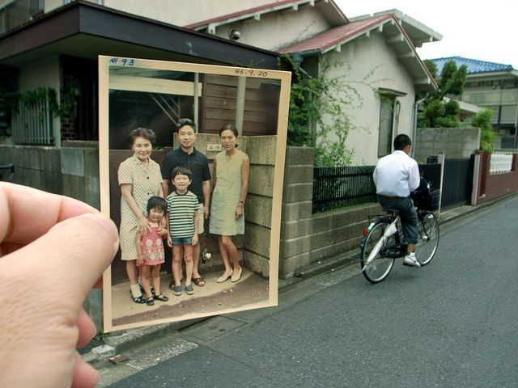

Shua Oh.
I make websites that feel like objects — small, handmade, and a little bit odd.
Selected work
05About

Hi, I'm Shua. I build for the web and make things with my hands — ceramics, books, and the occasional strange little app.
I like interfaces that borrow from physical things: a gallery you walk through, a cafe menu for your reading list, a recommender that refuses to recommend.
- Focus
- Web, interaction, 3D
- Tools
- HTML, CSS, JS, Next.js, Three.js
- Off-screen
- Ceramics, reading
Contact
Say hello.